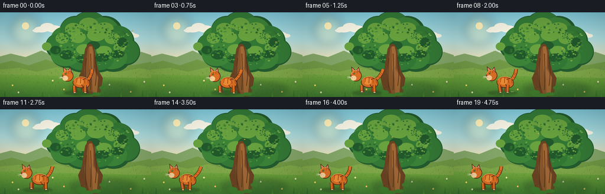
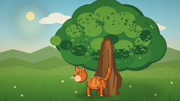
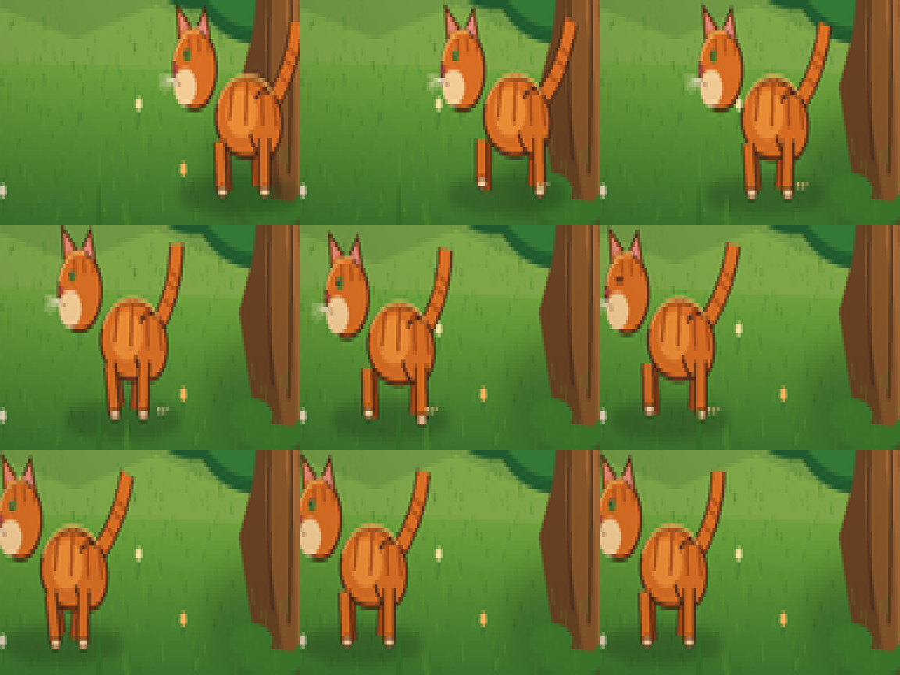
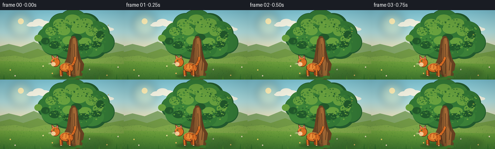

CODING AGENTS AS PIXEL WORLD MODELS
traex/DeepSeek-V4.1-Flash · instance_preservation_0054
点击播放 · 原生 RGB 像素
逐轮保存的候选
回放视频、检查图与代码变化。
每份候选均可单独播放。实际图片检查记录在下方工具轨迹中。
候选 01播放与检查图
点击播放 · 原生 RGB 像素

展开代码变化
--- 上一保存版本
+++ 本次保存版本
@@ -0,0 +1,468 @@
+from pathlib import Path
+import math
+import random
+
+import numpy as np
+from PIL import Image, ImageDraw, ImageFilter
+
+from artifact_io import save
+
+
+CASE_DIR = Path(__file__).resolve().parent
+W, H = 256, 144
+SS = 4
+RW, RH = W * SS, H * SS
+
+
+def px(value):
+ return int(round(value * SS))
+
+
+def box(left, top, right, bottom):
+ return (px(left), px(top), px(right), px(bottom))
+
+
+def points(values):
+ return [(px(x), px(y)) for x, y in values]
+
+
+def vertical_gradient(colors, top, bottom):
+ """Return a smooth vertical RGB gradient for one rectangular band."""
+ y0, y1 = px(top), px(bottom)
+ stops = np.asarray(colors, dtype=np.float32)
+ positions = np.linspace(0.0, 1.0, y1 - y0)
+ scaled = positions * (len(stops) - 1)
+ idx = np.minimum(scaled.astype(np.int32), len(stops) - 2)
+ frac = (scaled - idx)[:, None]
+ rows = stops[idx] * (1.0 - frac) + stops[idx + 1] * frac
+ return np.repeat(rows[:, None, :], RW, axis=1).astype(np.uint8)
+
+
+def paste_band(canvas, colors, top, bottom):
+ y0, y1 = px(top), px(bottom)
+ canvas[y0:y1] = vertical_gradient(colors, top, bottom)
+
+
+def soft_shadow(base, ellipse, color, blur):
+ layer = Image.new("RGBA", base.size, (0, 0, 0, 0))
+ ImageDraw.Draw(layer).ellipse(box(*ellipse), fill=color)
+ layer = layer.filter(ImageFilter.GaussianBlur(px(blur)))
+ base.alpha_composite(layer)
+
+
+def draw_cloud(draw, cx, cy, scale, alpha):
+ color = (244, 247, 231, alpha)
+ for dx, dy, rx, ry in [
+ (-12, 2, 12, 5), (-2, -2, 12, 7), (9, 1, 13, 6),
+ (20, 3, 10, 4), (-19, 4, 8, 3),
+ ]:
+ draw.ellipse(
+ box(cx + dx * scale - rx * scale, cy + dy * scale - ry * scale,
+ cx + dx * scale + rx * scale, cy + dy * scale + ry * scale),
+ fill=color,
+ )
+
+
+def draw_background(rng):
+ rgba = np.zeros((RH, RW, 4), dtype=np.uint8)
+ sky = vertical_gradient(
+ [(126, 202, 220), (176, 225, 226), (248, 224, 172)], 0, 92
+ )
+ rgba[:px(92), :, :3] = sky
+ rgba[:px(92), :, 3] = 255
+ meadow = vertical_gradient(
+ [(143, 186, 78), (100, 158, 58), (64, 126, 50)], 88, 144
+ )
+ rgba[px(88):, :, :3] = meadow
+ rgba[px(88):, :, 3] = 255
+ image = Image.fromarray(rgba, "RGBA")
+ draw = ImageDraw.Draw(image, "RGBA")
+
+ # Warm low sun and a few airy clouds.
+ glow = Image.new("RGBA", image.size, (0, 0, 0, 0))
+ gd = ImageDraw.Draw(glow)
+ gd.ellipse(box(18, 5, 68, 55), fill=(255, 242, 177, 70))
+ glow = glow.filter(ImageFilter.GaussianBlur(px(8)))
+ image.alpha_composite(glow)
+ draw = ImageDraw.Draw(image, "RGBA")
+ draw.ellipse(box(37, 17, 49, 29), fill=(255, 244, 188, 210))
+ draw_cloud(draw, 82, 27, 1.0, 105)
+ draw_cloud(draw, 210, 37, 0.85, 75)
+
+ # Layered, softly rounded hills.
+ draw.polygon(
+ points([(-8, 95), (-8, 77), (18, 70), (43, 76), (70, 65), (99, 78),
+ (126, 68), (154, 77), (181, 69), (211, 77), (239, 67),
+ (266, 76), (266, 100)]),
+ fill=(130, 167, 106, 255),
+ )
+ draw.polygon(
+ points([(-8, 101), (-8, 89), (20, 82), (48, 90), (78, 80), (107, 91),
+ (136, 82), (166, 90), (195, 80), (224, 90), (266, 82), (266, 105)]),
+ fill=(112, 154, 70, 255),
+ )
+ draw.polygon(
+ points([(-8, 105), (-8, 98), (31, 94), (62, 101), (96, 93),
+ (128, 101), (166, 94), (202, 101), (236, 95), (266, 100), (266, 112)]),
+ fill=(126, 169, 74, 255),
+ )
+
+ # Grass texture: short strokes with more density near the viewer.
+ for _ in range(760):
+ x = rng.uniform(-2, 258)
+ y = rng.uniform(93, 144)
+ length = rng.uniform(0.7, 2.7) * (0.7 + (y - 93) / 70)
+ lean = rng.uniform(-0.8, 0.8)
+ shade = rng.choice([(49, 113, 43), (75, 138, 50), (110, 164, 60)])
+ draw.line(
+ [(px(x), px(y)), (px(x + lean), px(y - length))],
+ fill=shade + (rng.randint(70, 145),),
+ width=max(1, px(0.35)),
+ )
+
+ # Tiny meadow flowers, deliberately sparse.
+ for x, y, c in [
+ (21, 124, (248, 222, 105)), (31, 136, (239, 226, 197)),
+ (89, 116, (245, 230, 166)), (108, 131, (249, 193, 95)),
+ (185, 123, (239, 227, 205)), (221, 135, (249, 210, 109)),
+ (244, 118, (235, 224, 194)),
+ ]:
+ draw.line([(px(x), px(y + 2)), (px(x), px(y + 5))], fill=(61, 124, 49, 210), width=px(0.45))
+ for ang in range(5):
+ a = ang * math.tau / 5
+ draw.ellipse(
+ box(x + math.cos(a) * 0.8 - 0.65, y + math.sin(a) * 0.8 - 0.65,
+ x + math.cos(a) * 0.8 + 0.65, y + math.sin(a) * 0.8 + 0.65),
+ fill=c + (235,),
+ )
+
+ # Broad, diffuse shade beneath the tree.
+ soft_shadow(image, (118, 118, 230, 143), (34, 78, 40, 86), 5)
+ return image
+
+
+def draw_tree(image, rng):
+ draw = ImageDraw.Draw(image, "RGBA")
+
+ # Branch structure remains partly visible through the crown.
+ branches = [
+ ((151, 69), (143, 42), (136, 24), 7.0),
+ ((156, 65), (170, 38), (181, 23), 6.0),
+ ((148, 72), (120, 51), (104, 37), 5.5),
+ ((158, 73), (192, 53), (209, 41), 5.5),
+ ((154, 63), (156, 35), (153, 17), 6.0),
+ ]
+ for p0, p1, p2, width in branches:
+ samples = []
+ for t in np.linspace(0, 1, 18):
+ x = (1 - t) ** 2 * p0[0] + 2 * (1 - t) * t * p1[0] + t ** 2 * p2[0]
+ y = (1 - t) ** 2 * p0[1] + 2 * (1 - t) * t * p1[1] + t ** 2 * p2[1]
+ samples.append((px(x), px(y)))
+ draw.line(samples, fill=(82, 54, 29, 255), width=px(width), joint="curve")
+ draw.line(samples, fill=(118, 77, 38, 255), width=px(max(1.0, width - 2.2)), joint="curve")
+
+ # Irregular crown silhouette.
+ blobs = [
+ (111, 48, 24, 23), (128, 31, 27, 25), (151, 25, 31, 27),
+ (177, 33, 30, 27), (200, 49, 27, 26), (213, 67, 24, 23),
+ (192, 79, 28, 22), (166, 82, 30, 20), (140, 80, 31, 22),
+ (113, 72, 27, 22), (98, 57, 21, 21), (157, 49, 39, 32),
+ (130, 60, 29, 24), (184, 60, 31, 24),
+ ]
+ for x, y, rx, ry in blobs:
+ draw.ellipse(box(x - rx, y - ry, x + rx, y + ry), fill=(34, 93, 48, 255))
+
+ # Mid-green lobes create the leafy volume.
+ for i, (x, y, rx, ry) in enumerate(blobs):
+ dx = -2.5 if i % 3 == 0 else (-1.0 if i % 3 == 1 else 0.5)
+ dy = -2.0 if i % 2 == 0 else -0.5
+ shrink = 1.5 + (i % 4) * 0.5
+ color = (50, 121, 54, 255) if i % 3 else (59, 132, 57, 255)
+ draw.ellipse(box(x - rx + shrink + dx, y - ry + shrink + dy,
+ x + rx - shrink + dx, y + ry - shrink + dy), fill=color)
+
+ # Sunlit crowns and shadow pockets.
+ for x, y, rx, ry in [
+ (124, 28, 14, 10), (150, 20, 16, 11), (177, 27, 15, 10),
+ (105, 44, 11, 9), (132, 42, 13, 10), (163, 38, 16, 11),
+ (190, 44, 13, 10), (202, 60, 10, 8), (79, 58, 8, 7),
+ (143, 63, 14, 9), (176, 65, 13, 8),
+ ]:
+ draw.ellipse(box(x - rx, y - ry, x + rx, y + ry), fill=(102, 162, 63, 205))
+ for x, y, rx, ry in [
+ (113, 72, 12, 8), (143, 79, 14, 8), (172, 77, 13, 7),
+ (199, 71, 11, 7), (207, 51, 9, 8), (94, 64, 9, 7),
+ (158, 56, 11, 7),
+ ]:
+ draw.ellipse(box(x - rx, y - ry, x + rx, y + ry), fill=(32, 88, 43, 160))
+
+ # Individual leaf dabs break up the ellipse edges.
+ leaf_colors = [
+ (39, 100, 47), (58, 129, 54), (83, 149, 58),
+ (112, 169, 66), (46, 111, 49),
+ ]
+ for _ in range(260):
+ angle = rng.uniform(0, math.tau)
+ radius = rng.uniform(0.55, 1.08)
+ cx, cy = 157 + math.cos(angle) * 61 * radius, 54 + math.sin(angle) * 34 * radius
+ rx, ry = rng.uniform(0.7, 2.2), rng.uniform(0.55, 1.6)
+ color = rng.choice(leaf_colors) + (rng.randint(125, 225),)
+ draw.ellipse(box(cx - rx, cy - ry, cx + rx, cy + ry), fill=color)
+
+ # Trunk with a flared base and subtle bark ridges.
+ trunk = points([
+ (138, 99), (141, 80), (144, 62), (149, 54), (155, 54),
+ (160, 62), (162, 82), (167, 100), (174, 112), (169, 139),
+ (164, 143), (149, 143), (139, 138), (132, 112),
+ ])
+ draw.polygon(trunk, fill=(103, 67, 35, 255))
+ draw.polygon(
+ points([(143, 99), (147, 73), (149, 60), (154, 57), (158, 65),
+ (159, 94), (166, 110), (164, 137), (151, 140), (144, 112)]),
+ fill=(132, 86, 44, 255),
+ )
+ draw.polygon(
+ points([(151, 58), (156, 58), (158, 70), (157, 96), (166, 111),
+ (164, 137), (157, 140), (156, 112), (152, 96)]),
+ fill=(159, 104, 53, 190),
+ )
+ for x, y0, y1, bend in [
+ (146, 78, 129, -1.5), (153, 70, 132, 1.1), (161, 76, 125, 1.8),
+ ]:
+ ridge = []
+ for t in np.linspace(0, 1, 8):
+ ridge.append((px(x + bend * math.sin(t * math.pi)), px(y0 + (y1 - y0) * t)))
+ draw.line(ridge, fill=(75, 48, 27, 175), width=px(1.0), joint="curve")
+
+ # Moss and grass at the roots.
+ for x, y, rx, ry in [
+ (137, 136, 9, 4), (163, 139, 8, 3), (146, 141, 13, 3),
+ (174, 128, 6, 3),
+ ]:
+ draw.ellipse(box(x - rx, y - ry, x + rx, y + ry), fill=(62, 125, 46, 230))
+ for _ in range(42):
+ x = rng.uniform(132, 174)
+ y = rng.uniform(126, 143)
+ draw.line([(px(x), px(y)), (px(x + rng.uniform(-1, 1)), px(y - rng.uniform(1, 4)))],
+ fill=(75, 144, 50, 230), width=max(1, px(0.35)))
+
+
+def cat_pose(frame):
+ # Two settled frames, a smooth leftward walk, then a short stop.
+ keys = [
+ (0, 132.0), (1, 132.0), (2, 130.5), (3, 125.0), (4, 117.0),
+ (5, 108.0), (6, 99.0), (7, 90.0), (8, 81.5), (9, 74.0),
+ (10, 67.5), (11, 62.5), (12, 59.0), (13, 57.0), (14, 56.0),
+ (15, 55.8), (16, 55.8), (17, 55.8), (18, 55.8), (19, 55.8),
+ ]
+ x = keys[frame][1]
+ walking = 2 <= frame <= 14
+ phase = (frame - 2) * 0.88
+ bob = math.sin(phase * 2) * (0.55 if walking else 0.0)
+ return x, walking, phase, bob
+
+
+def draw_cat(image, frame):
+ cx, walking, phase, bob = cat_pose(frame)
+ ground = 136.0 + bob
+ body_y = ground - 17.5
+ head_y = ground - 27.5 + math.sin(phase) * (0.35 if walking else 0.0)
+
+ # Moving contact shadow.
+ soft_shadow(image, (cx - 24, 133.2, cx + 26, 140.5), (35, 62, 32, 88), 1.5)
+ draw = ImageDraw.Draw(image, "RGBA")
+
+ outline = (74, 40, 21, 255)
+ orange = (218, 113, 37, 255)
+ orange_light = (239, 145, 56, 255)
+ orange_dark = (170, 78, 27, 255)
+ cream = (246, 210, 155, 255)
+
+ # Far legs, drawn first and slightly darker.
+ stride = math.sin(phase) * 2.8 if walking else 0.0
+ lift_far = max(0.0, math.sin(phase + math.pi)) * 2.0 if walking else 0.0
+ far_front = (cx - 5.0 - stride, ground - 11.0, cx - 4.2 - stride * 1.35, ground - lift_far)
+ far_hind = (cx + 10.0 + stride, ground - 12.0, cx + 9.0 + stride * 1.15, ground - 1.0)
+ for p0, p1 in [(far_hind[0:2], far_hind[2:4]), (far_front[0:2], far_front[2:4])]:
+ draw.line([(px(p0[0]), px(p0[1])), (px(p1[0]), px(p1[1]))],
+ fill=outline, width=px(5.1))
+ draw.line([(px(p0[0]), px(p0[1])), (px(p1[0]), px(p1[1]))],
+ fill=orange_dark, width=px(3.7))
+
+ # Tail: thick tapered curve, raised with a gentle animated sway.
+ tail_sway = math.sin(phase * 0.8) * 2.6
+ p0 = (cx + 15.0, ground - 20.0)
+ p1 = (cx + 24.5 + tail_sway * 0.35, ground - 28.0)
+ p2 = (cx + 26.0 + tail_sway, ground - 39.0)
+ tail = []
+ for t in np.linspace(0, 1, 16):
+ x = (1 - t) ** 2 * p0[0] + 2 * (1 - t) * t * p1[0] + t ** 2 * p2[0]
+ y = (1 - t) ** 2 * p0[1] + 2 * (1 - t) * t * p1[1] + t ** 2 * p2[1]
+ tail.append((px(x), px(y)))
+ draw.line(tail, fill=outline, width=px(6.2), joint="curve")
+ draw.line(tail, fill=orange, width=px(4.5), joint="curve")
+ for t in (0.34, 0.54, 0.72):
+ i = int(t * (len(tail) - 1))
+ x, y = tail[i]
+ draw.line([(x - px(1.7), y - px(1.0)), (x + px(1.7), y + px(1.0))],
+ fill=orange_dark, width=px(1.0))
+
+ # Body and haunch.
+ draw.ellipse(box(cx - 9.0, body_y - 9.0, cx + 18.0, body_y + 10.0),
+ fill=orange, outline=outline, width=px(1.1))
+ draw.ellipse(box(cx + 5.5, body_y - 6.0, cx + 20.0, body_y + 10.0),
+ fill=orange, outline=outline, width=px(1.0))
+ draw.ellipse(box(cx - 4.0, body_y - 6.0, cx + 9.0, body_y + 5.0),
+ fill=orange_light)
+
+ # Body stripes follow the curved back.
+ for sx, top, bottom, bend in [
+ (cx - 1.0, body_y - 8.2, body_y + 1.0, -1.0),
+ (cx + 5.0, body_y - 8.8, body_y + 2.0, -0.4),
+ (cx + 11.0, body_y - 7.5, body_y + 2.3, 0.3),
+ (cx + 16.0, body_y - 5.5, body_y + 2.8, 0.8),
+ ]:
+ draw.line(
+ [(px(sx), px(top)), (px(sx + bend), px((top + bottom) / 2)),
+ (px(sx + bend * 1.8), px(bottom))],
+ fill=orange_dark, width=px(1.3), joint="curve",
+ )
+
+ # Near legs and cream paws.
+ near_stride = -stride
+ lift_near = max(0.0, math.sin(phase)) * 2.0 if walking else 0.0
+ near_front = (cx - 7.0 + near_stride, ground - 11.5,
+ cx - 6.0 + near_stride * 1.35, ground - lift_near)
+ near_hind = (cx + 12.0 - near_stride, ground - 12.0,
+ cx + 12.0 - near_stride * 1.12, ground)
+ for p0, p1 in [(near_hind[0:2], near_hind[2:4]), (near_front[0:2], near_front[2:4])]:
+ draw.line([(px(p0[0]), px(p0[1])), (px(p1[0]), px(p1[1]))],
+ fill=outline, width=px(5.4))
+ draw.line([(px(p0[0]), px(p0[1])), (px(p1[0]), px(p1[1]))],
+ fill=orange, width=px(3.8))
+ draw.ellipse(box(p1[0] - 2.0, p1[1] - 1.1, p1[0] + 2.4, p1[1] + 1.6),
+ fill=cream, outline=outline, width=px(0.55))
+
+ # Head, ears and white cheek/muzzle.
+ draw.ellipse(box(cx - 27.0, head_y - 10.2, cx - 8.0, head_y + 9.0),
+ fill=orange, outline=outline, width=px(1.1))
+ # Ear triangles with warm pink interiors.
+ draw.polygon(points([(cx - 24.5, head_y - 7.0), (cx - 25.5, head_y - 16.0),
+ (cx - 18.5, head_y - 10.2)]),
+ fill=orange, outline=outline, width=px(0.85))
+ draw.polygon(points([(cx - 17.0, head_y - 10.0), (cx - 13.0, head_y - 15.4),
+ (cx - 10.5, head_y - 6.5)]),
+ fill=orange, outline=outline, width=px(0.85))
+ draw.polygon(points([(cx - 23.5, head_y - 9.2), (cx - 24.0, head_y - 13.7),
+ (cx - 20.4, head_y - 10.2)]), fill=(222, 137, 121, 255))
+ draw.polygon(points([(cx - 16.0, head_y - 10.0), (cx - 13.4, head_y - 13.3),
+ (cx - 12.1, head_y - 8.1)]), fill=(222, 137, 121, 255))
+
+ # Forehead stripes.
+ for x in (cx - 20.0, cx - 16.0, cx - 12.0):
+ draw.line([(px(x), px(head_y - 8.0)), (px(x + 0.3), px(head_y - 4.6))],
+ fill=orange_dark, width=px(1.05))
+ draw.ellipse(box(cx - 26.3, head_y - 0.7, cx - 17.0, head_y + 7.7),
+ fill=cream)
+ # Nose, mouth and eye. Blink once late in the walk.
+ draw.ellipse(box(cx - 27.1, head_y - 1.7, cx - 24.8, head_y + 0.4),
+ fill=(165, 75, 65, 255))
+ draw.line([(px(cx - 25.9), px(head_y + 0.2)), (px(cx - 25.8), px(head_y + 2.0)),
+ (px(cx - 23.8), px(head_y + 2.7))],
+ fill=(105, 57, 43, 220), width=px(0.55), joint="curve")
+ draw.line([(px(cx - 25.8), px(head_y + 2.0)), (px(cx - 27.3), px(head_y + 2.9))],
+ fill=(105, 57, 43, 220), width=px(0.55))
+ if frame == 12:
+ draw.line([(px(cx - 22.2), px(head_y - 3.8)), (px(cx - 19.2), px(head_y - 3.6))],
+ fill=outline, width=px(1.0))
+ else:
+ draw.ellipse(box(cx - 22.3, head_y - 5.2, cx - 19.3, head_y - 2.6),
+ fill=(87, 122, 46, 255))
+ draw.ellipse(box(cx - 21.9, head_y - 4.9, cx - 20.8, head_y - 3.7),
+ fill=(25, 33, 18, 255))
+ draw.ellipse(box(cx - 21.4, head_y - 4.8, cx - 20.9, head_y - 4.2),
+ fill=(240, 241, 198, 255))
+ # Whiskers.
+ for dy, slope in [(-0.7, -1.7), (0.9, -0.7), (2.2, 0.8)]:
+ draw.line([(px(cx - 25.5), px(head_y + 1.6)),
+ (px(cx - 32.5), px(head_y + 1.6 + dy))],
+ fill=(249, 236, 204, 205), width=px(0.38))
+ draw.line([(px(cx - 25.0), px(head_y + 2.2)),
+ (px(cx - 31.0), px(head_y + 2.2 + dy + slope * 0.25))],
+ fill=(249, 236, 204, 160), width=px(0.32))
+
+ # Warm rim light along the back and head.
+ draw.arc(box(cx - 8.5, body_y - 9.3, cx + 18.2, body_y + 10.2),
+ start=197, end=326, fill=(255, 185, 92, 175), width=px(0.7))
+ draw.arc(box(cx - 26.8, head_y - 10.0, cx - 8.1, head_y + 8.8),
+ start=192, end=282, fill=(255, 194, 103, 180), width=px(0.65))
+
+ # Small dust puffs behind the moving paws.
+ if walking and frame in (4, 6, 8, 10, 12):
+ puff = (frame - 4) * 0.35
+ for k, (dx, dy, r) in enumerate([(0, 0, 1.3), (2.2, 0.7, 1.0), (4.2, 1.1, 0.7)]):
+ alpha = max(28, 95 - k * 20)
+ draw.ellipse(box(cx + 14 + dx + puff, 134 + dy - k * 0.5,
+ cx + 14 + dx + puff + r, 134 + dy - k * 0.5 + r),
+ fill=(221, 196, 137, alpha))
+
+
+def draw_foreground(image, frame):
+ draw = ImageDraw.Draw(image, "RGBA")
+ # Sparse foreground blades frame the bottom without obscuring the cat.
+ for x, y, height, color in [
+ (8, 144, 11, (50, 114, 45)), (14, 144, 7, (69, 132, 46)),
+ (72, 144, 10, (56, 119, 43)), (84, 144, 7, (74, 137, 47)),
+ (197, 144, 11, (51, 116, 43)), (205, 144, 8, (70, 133, 45)),
+ (241, 144, 12, (51, 118, 42)), (250, 144, 8, (74, 139, 45)),
+ ]:
+ draw.polygon(points([(x - 1.2, y), (x, y - height), (x + 1.5, y)]),
+ fill=color + (230,))
+
+ # A few drifting leaves give the air gentle motion.
+ positions = [(224, 31), (220, 38), (216, 44), (211, 50), (206, 55),
+ (201, 58), (196, 60), (190, 61), (184, 61), (179, 60),
+ (174, 59), (169, 57), (165, 55), (161, 53), (158, 51),
+ (155, 49), (152, 47), (149, 45), (146, 43), (143, 41)]
+ lx, ly = positions[frame]
+ draw.ellipse(box(lx - 1.2, ly - 0.6, lx + 1.2, ly + 0.6),
+ fill=(213, 174, 64, 210))
+ draw.line([(px(lx), px(ly + 0.8)), (px(lx - 1.5), px(ly + 2.0))],
+ fill=(106, 126, 45, 190), width=px(0.3))
+
+ # Fine warm light wash and soft vignette are applied per frame.
+
+
+def render_frame(frame, rng):
+ image = draw_background(rng)
+ draw_tree(image, rng)
+ draw_cat(image, frame)
+ draw_foreground(image, frame)
+
+ rgba = np.asarray(image).astype(np.float32)
+ yy, xx = np.mgrid[0:RH, 0:RW]
+ nx = (xx - RW / 2) / (RW / 2)
+ ny = (yy - RH / 2) / (RH / 2)
+ vignette = np.clip(1.0 - 0.095 * (nx * nx + ny * ny), 0.0, 1.0)
+ rgba[:, :, :3] *= vignette[:, :, None]
+ # Slight amber light from the upper-left.
+ rgba[:, :, 0] = np.clip(rgba[:, :, 0] * 1.018 + 1.0, 0, 255)
+ rgba[:, :, 1] = np.clip(rgba[:, :, 1] * 1.004, 0, 255)
+ image = Image.fromarray(np.clip(rgba, 0, 255).astype(np.uint8), "RGBA")
+ frame_image = image.convert("RGB").resize((W, H), Image.Resampling.LANCZOS)
+ return np.asarray(frame_image, dtype=np.uint8)
+
+
+def main():
+ frames = []
+ for frame in range(20):
+ # Reset each frame's texture seed so only intended subjects move.
+ rng = random.Random(20261111)
+ frames.append(render_frame(frame, rng))
+ frames = np.stack(frames)
+ save(frames, CASE_DIR)
+ print(f"Wrote {len(frames)} frames to {CASE_DIR}")
+
+
+if __name__ == "__main__":
+ main()
候选 02播放与检查图
点击播放 · 原生 RGB 像素

展开代码变化
--- 上一保存版本
+++ 本次保存版本
@@ -75,7 +75,7 @@
)
rgba[px(88):, :, :3] = meadow
rgba[px(88):, :, 3] = 255
- image = Image.fromarray(rgba, "RGBA")
+ image = Image.fromarray(rgba)
draw = ImageDraw.Draw(image, "RGBA")
# Warm low sun and a few airy clouds.
@@ -448,7 +448,7 @@
# Slight amber light from the upper-left.
rgba[:, :, 0] = np.clip(rgba[:, :, 0] * 1.018 + 1.0, 0, 255)
rgba[:, :, 1] = np.clip(rgba[:, :, 1] * 1.004, 0, 255)
- image = Image.fromarray(np.clip(rgba, 0, 255).astype(np.uint8), "RGBA")
+ image = Image.fromarray(np.clip(rgba, 0, 255).astype(np.uint8))
frame_image = image.convert("RGB").resize((W, H), Image.Resampling.LANCZOS)
return np.asarray(frame_image, dtype=np.uint8)
可观测工具轨迹
实际执行的命令与返回图片。
命令 1exit 0
/bin/bash -c "pwd && rg --files -g 'prompt.txt' -g 'GENERATION_RULES.md' -g 'task_spec.json' -g '"'!**/.git/**'"'"
命令 2exit 0
/bin/bash -c 'ls -la && find . -maxdepth 2 -type f | sort | head -200'
命令 3exit 0
/bin/bash -c 'cat GENERATION_RULES.md'
命令 4exit 0
/bin/bash -c 'cat task_spec.json'
命令 5exit 0
/bin/bash -c 'cat prompt.txt'
命令 6exit 0
/bin/bash -c "sed -n '1,240p' artifact_io.py && sed -n '1,220p' player_template.html"
命令 7exit 0
/bin/bash -c 'python generate.py'
命令 8exit 0
/bin/bash -c "ls -lh frames/*.png inspection.png transition_check.png pixels.npz index.html && python - <<'PY'
import numpy as np
from PIL import Image
frames=[np.array(Image.open(f'frames/{i:02d}.png')).astype(np.int16) for i in range(20)]
for i in range(1,20):
print(i, round(float(np.abs(frames[i]-frames[i-1]).mean()),3))
PY"命令 9exit 0
/bin/bash -c "python - <<'PY'
from PIL import Image
import numpy as np
import os
for i in [0,1,2,3,4,7,10,13,14,15,16,17,18,19]:
im=Image.open(f'frames/{i:02d}.png').resize((1024,576),Image.Resampling.NEAREST)
im.save(f'.tmp/zoom_{i:02d}.png')
# candidate cat region montage 4x4
frames=[Image.open(f'frames/{i:02d}.png') for i in range(20)]
sel=[2,4,6,8,10,12,14,15,19]
out=Image.new('RGB',(3*384,3*288),(20,20,20))
for j,idx in enumerate(sel):
crop=frames[idx].crop((30,92,158,144)).resize((384,288),Image.Resampling.NEAREST)
out.paste(crop,((j%3)*384,(j//3)*288))
out.save('.tmp/cat_motion.png')
PY"命令 10exit 0
/bin/bash -c "python generate.py && python - <<'PY'
import json
from pathlib import Path
import numpy as np
from PIL import Image
spec=json.loads(Path('task_spec.json').read_text())
arr=np.load('pixels.npz')['pixels']
assert arr.shape == (spec['height'], spec['width'], spec['frames'])
assert arr.dtype == np.uint32
files=sorted(Path('frames').glob('*.png'))
assert len(files)==spec['frames']
assert all(Image.open(p).size==(spec['width'],spec['height']) for p in files)
html=Path('index.html').read_text()
assert 'window.__pixelReady=true' in html and '__DATA__' not in html
print('validated:', arr.shape, arr.dtype, len(files), 'frames', len(html), 'HTML bytes')
PY"视觉工具实际返回图片 1

视觉工具实际返回图片 2

视觉工具实际返回图片 3

视觉工具实际返回图片 4

保存候选 2 份；完成命令 10 次；可验证图片返回 4 张。原始 API 响应与完整日志保留在本地。